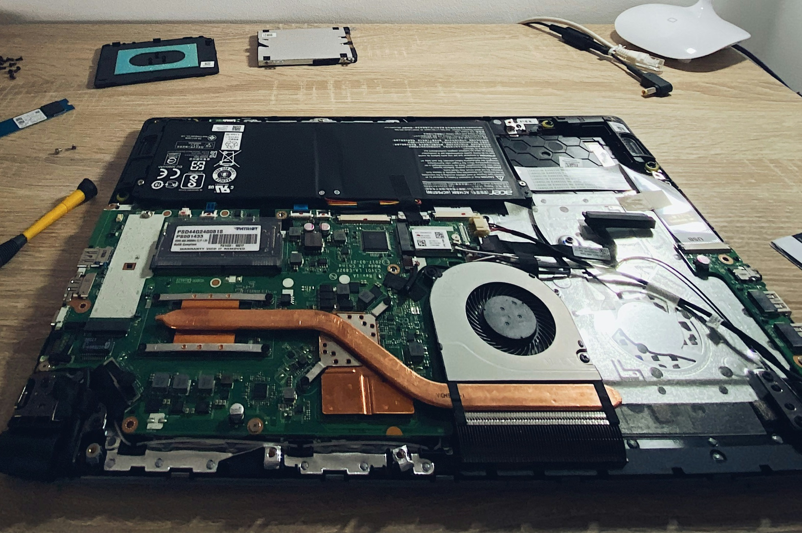

Jan 2025 - Present
Freelance IT Support
Independent Professional

Providing independent IT support services to individual users, assisting with computer maintenance, software installation and configuration, and troubleshooting.
- Performing hardware maintenance, diagnostics, and troubleshooting.
- Installing, configuring, and updating operating systems and software.
- Resolving common hardware, software, and connectivity issues.